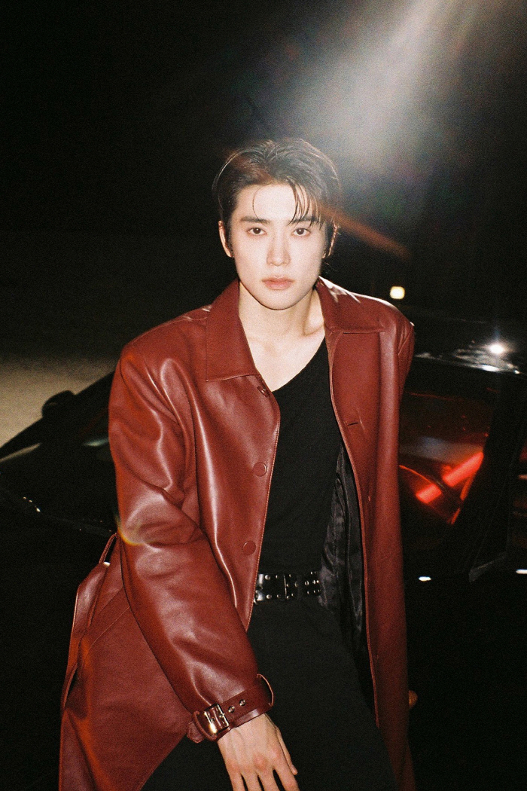
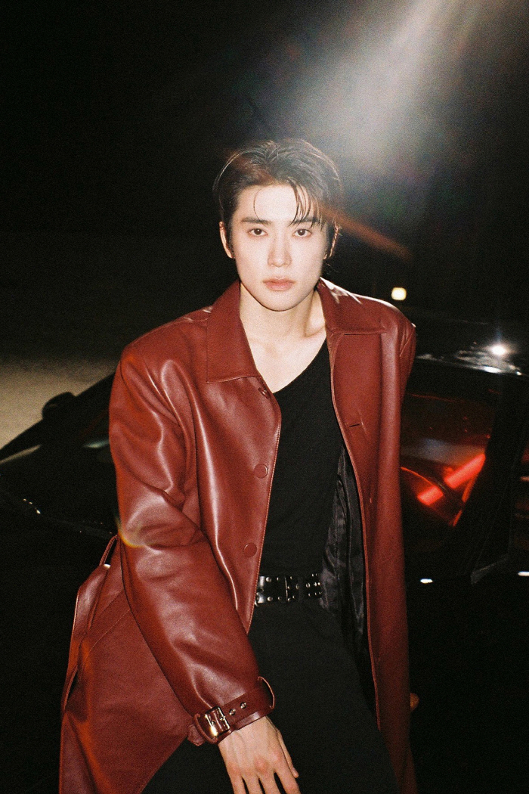

Jeong Jaehyun, known professionally as Jaehyun, is a South Korean singer, songwriter, and actor born on February 14, 1997, in Seoul. He is a member of NCT, under SM Entertainment, and part of its sub-units NCT U, NCT 127, and NCT DoJaeJung. Having lived in the United States during his childhood, he is fluent in English and admired for his charming personality and deep vocals. Since debuting in 2016, Jaehyun has gained fame for his musical versatility and stage presence. Apart from music, he starred in the drama Dear. M and became a global ambassador for Prada, further establishing his global influence.